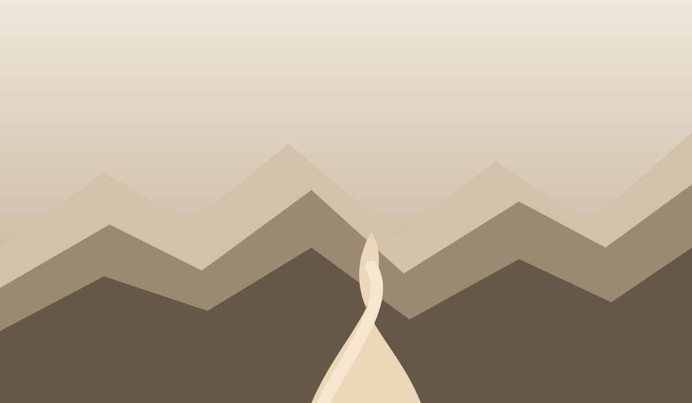
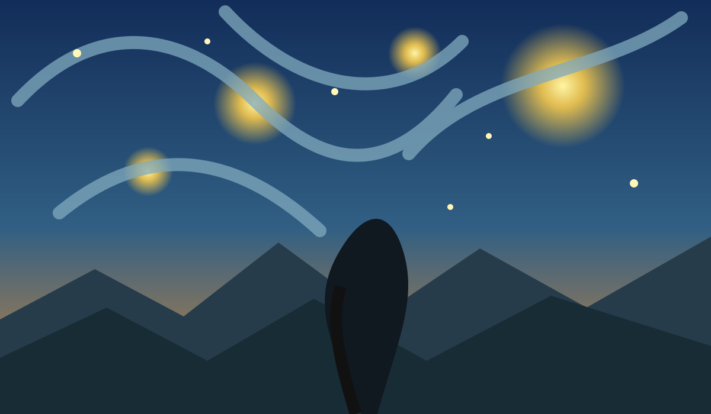

Love · Relationships · Loss
Understanding Emotional Loyalty and Its Consequences
On attachment, silence, and the strange loyalty we feel toward people who have already left our lives.
Read essay →Essays about love, loss, meaning, doubt, identity and the questions that refuse to leave quietly.
On attachment, silence, and the strange loyalty we feel toward people who have already left our lives.
Read essay →

On routine, responsibility, and the courage to search for meaning.
A small archive of things I could not stop thinking about.
Short observations, unfinished thoughts, and sentences that still need time.
No noise. Just something worth reading.